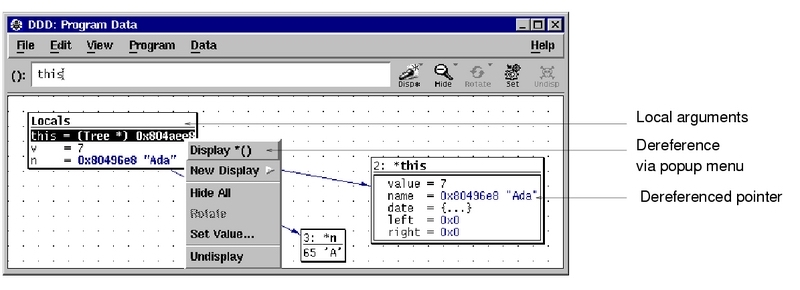
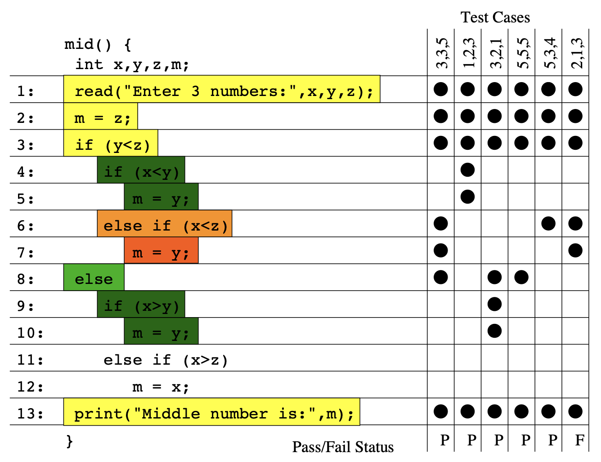

Yanyan Jiang
The last assignment
Debugging (2)
Fault → Error → Failure
Program as a
Key idea
Readings
rrKey idea
Readings
This is human-in-the-loop

Often people who encounter a bug spend a lot of time investigating which changes to the input file will make the bug go away and which changes will not affect it.
— Richard Stallman, Using and Porting GNU CC
Fault → Error → Failure
Key insight
Similarly, what if we have tons of test cases?

Search for a “minimum” change that can make test cases pass!
$$\min_{P' \in \textrm{PASS} } d(P, P')$$
The GenProg
Takeaways